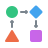

Company Currency Mixin
 Description
Description
Company Currency Mixin is a lightweight mixin module in the
@simetri-sinergi-id/ssi-mixin technology suite for Odoo 15.
It provides a reusable abstract model — mixin.company_currency —
that adds a company field and its derived currency field to any model.
Any model that inherits from mixin.company_currency automatically gains:
-
company_id — a mandatory
res.companyfield that defaults to the current user's company. -
company_currency_id — a stored, related
res.currencyfield that always reflects the selected company's currency.
Monetary fields on inheriting models can set
currency_field='company_currency_id' to format amounts in the
company's currency without any extra boilerplate.
 Key Features
Key Features
- Abstract Mixin Design: Inherit
mixin.company_currencyin any model — no structural view changes required. - Auto Company Default:
company_iddefaults to the current user's company automatically. - Derived Currency:
company_currency_idis always in sync with the selected company's currency via a stored related field. - Monetary Field Ready: Set
currency_field='company_currency_id'on any monetary field to enable proper currency display. - Minimal Footprint: Depends only on
base— no heavy extra dependencies. - Open Source: AGPL-3.0 license with community-driven improvements.

Use Cases / ContextUse this mixin for any transactional or master-data model that needs multi-company currency awareness:
- Sale/Purchase Orders: Ensure monetary fields are always displayed in the owning company's currency.
- Invoices & Payments: Standardise company currency derivation across accounting documents.
- Warehouse Transfers: Attach cost fields with correct currency to stock transfer lines.
- Custom Transactions: Any model with monetary amounts that must respect multi-company currency settings.
Simply set _inherit = ["mixin.company_currency"] on your model and reference company_currency_id in your monetary fields.
 Installation & Usage
Installation & Usage
- Clone branch 15.0 of the repository: https://github.com/simetri-sinergi-id/ssi-mixin
- Add the path to this repository in your Odoo configuration (
addons-path). - Update the module list (ensure you are in developer mode).
- Go to Apps → Apps → Main Apps, search for Company Currency Mixin, and install.
- In your custom model:
_inherit = ["mixin.company_currency"] - On any monetary field, add:
currency_field="company_currency_id"
 FAQ
FAQ
- Standalone? No — it is a mixin foundation. Install it as a dependency of your custom module.
- Odoo Version? Odoo 15.0.
- Is company_id required? Yes — it defaults to the current user's company but can be changed.
- Is company_currency_id stored? Yes — it is a stored related field so it can be used in domain filters and reports.
- Contribute? Fork, branch, and submit a pull request on GitHub.
 Bug Tracker
Bug Tracker
Bugs are tracked on GitHub Issues. In case of trouble, please check there if your issue has already been reported. If you spotted it first, help us smash it by providing detailed and welcomed feedback.
- Report Issues: Create a new issue with detailed description and steps to reproduce.
- Search Existing: Browse existing issues to see if your problem has already been reported.
 Credits & Contributors
Credits & Contributors
This module is developed and maintained by PT. Simetri Sinergi Indonesia.
- Core Development:
- Andhitia Rama <andhitia.r@gmail.com>
- Michael Viriyananda <viriyananda.michael@gmail.com>
- Maintenance: PT. Simetri Sinergi Indonesia
- Special Thanks: To the Odoo Community Association (OCA) for the development guidelines and best practices.